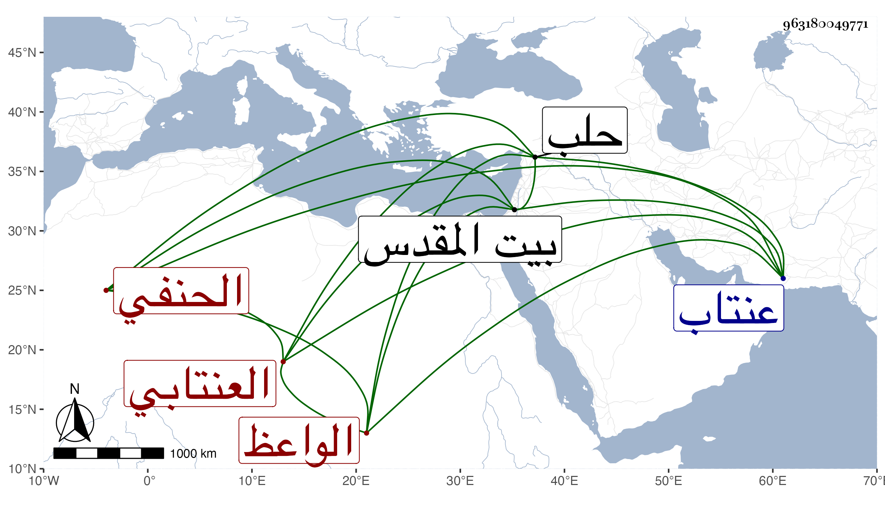

0902Sakhawi.DawLamic.ITO20230111-ara1.EIS1600.963180049771
Biography ID: 963180049771
581
محمود بن محمد بن عبد الله البدر العنتابي الحنفي الواعظ . أخذ في بلاد الروم عن الموفق والجمال الأقصرائيين ثم قدم عنتاب فنزل بجامع مؤمن مدة يذكر الناس فكان يحصل لهم في مجلسه رقة وخشوع وبكاء بحيث تاب على يده جماعة ، ثم توجه إلى القدس زائرا فأقام مدة ثم رجع إلى حلب فوعظ بجامعها العتيق . قال البدر العيني أخذت عنه في سنة ثمانين تصريف العزي والفرائض السراجية وغيرهما وذكره فيمن مات سنة خمس وتبعه شيخنا في إنبائه ثم نقل عن العيني أنه قال ذكرته فيها تبركا وإلا فقد مات قبلها بكثير كما تقدم . قلت وهذا من البدر عجيب .
